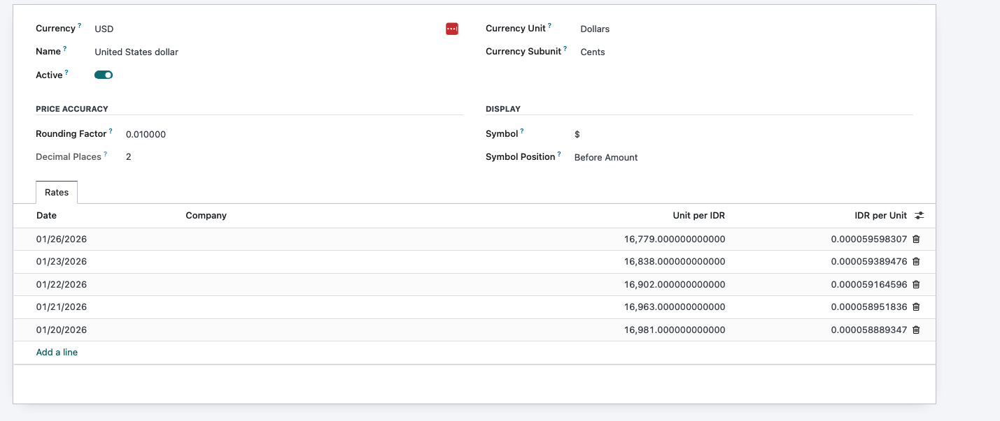

Bank Indonesia Currency Rate Integration
This Odoo module integrates with Bank Indonesia’s official exchange rate data,
ensuring your accounting and financial transactions always use the latest rates.
✨ Features
- Automatic Daily Updates
Fetches exchange rates directly from Bank Indonesia every working day via a scheduled cron job.
- USD JISDOR Support
Uses the official Jakarta Interbank Spot Dollar Rate (JISDOR) for USD/IDR.
- Multi-Currency Support
Updates all active currencies in Odoo (excluding IDR) using Bank Indonesia’s Transaction Rates.
The module calculates the mid-rate from buy & sell values.
- Dynamic Currency Detection
No hardcoding required. Only currencies marked as active in Odoo are updated.
- Multi-Company Ready
Rates are created and stored per company, supporting multi-company environments seamlessly.
- Audit-Ready
Ensures compliance with Indonesian accounting standards by using official BI rates and detailed logging.
🛠 Technical Details
- Extends the
res.currency.rate model with a custom method fetch_bi_rates.
- Scrapes official BI pages for:
- JISDOR (USD/IDR).
- Transaction Rates (all other currencies).
- Calculates mid-rates from BI’s buy and sell values.
- Stores rates per company for accounting and reporting.
- Includes robust error handling and logging for transparency.
🚀 Installation
- Download or clone this repository.
- Zip the folder
bi_currency_rate.
- Upload and install the module in Odoo Apps.
- The cron job will run daily at 11:30 WIB (GMT+7) to fetch BI rates automatically (weekends excluded).
📌 Usage
- Navigate to Accounting > Configuration > Currencies and ensure your currencies are
active.
- The module will automatically update rates for all active currencies except IDR.
- You can also trigger the update manually in Python:
self.env['res.currency.rate'].fetch_bi_rates()
🖼️ Screenshot
Example view of currency rates updated in Odoo:

📑 Notes
- Ensure currencies like CNH and CNY are active in Odoo if you want both
rates stored.
- Logs can be checked in
odoo.log for detailed information about updates, skipped currencies, or
parsing issues.
- Designed for Odoo 16, but can be adapted for later versions with minimal changes.
🐞 Issue
Report or track issues here